Fonte: gare di altri paesi/India/biologia/INBO2023-Questions-en.pdf · Apri PDF · apri PDF p.1
Cluster: Onde e Oscillazioni
Soluzioni (stessa cartella): · · · · · · · · · · ·
Problema 1
(1 point) Which of the following sets of chemicals and/or instrument can be used to prepare sodium phosphate buffer of approximately pH 7.0?
I. NaHPO salt, NaHPO salt and water. II. NaHPO salt, NaOH solution and pH meter. III. NaHPO salt, water and pH meter. IV. Stocks of: NaHPO solution, NaHPO solution and water.
(pKa values for phosphoric acid: 2.12, 7.21, 12.32)
(A) Only I (B) Only IV (C) Only I, II and IV (D) I, II, III and IV
Topic: Thermodynamics Metodi: Physical Modeling Competenze: Physical Reasoning Fonte: Testo (PDF) — p.2
Problema 2
(1 point) Absorption/transmission spectrum of a compound often provides information about its physical property such as color. Absorption spectra of three compounds are shown below.
I, II and III respectively represent:
(A) hemoglobin, oxyhemoglobin and water. (B) oxyhemoglobin, hemoglobin and water. (C) water, hemoglobin and oxyhemoglobin. (D) oxyhemoglobin, water and hemoglobin.
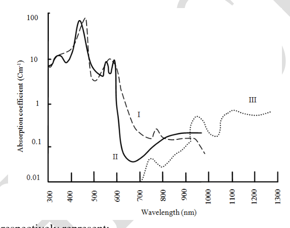
Absorption spectra of three compoundsTopic: Wave Optics Metodi: Experimental Data Analysis Competenze: Diagrammatic Reasoning, Experimental Data Analysis Fonte: Testo (PDF) — p.2
Problema 3
(1 point) A student was studying transport of a solute ‘X’ through the erythrocyte membrane in a laboratory. She obtained the following data:
| Expt. | [X] outside (mM) | Rate of Entry of X (moles/min) |
|---|---|---|
| I | 0 | 0 |
| II | 0.5 | 7 |
| III | 1.0 | 14 |
| IV | 2.0 | 26 |
| V | 3.0 | 35 |
| VI | 5.0 | 38 |
Which of the following can be deduced from the observations?
(A) The experiments I – VI were carried out at successively increasing temperatures. (B) The nature of solute must be highly non-polar. (C) Increase of solute concentration outside has resulted in proportional increase in rate of entry of the solute into the cell. (D) The major limiting factor for the rate of entry is the carrier protein transporter.
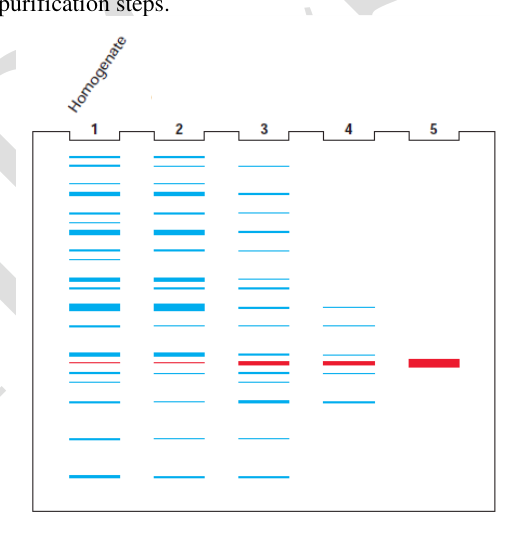
Data table for solute transport rateTopic: Fluid Mechanics Metodi: Experimental Data Analysis, Graph Linearization Competenze: Experimental Data Analysis, Physical Reasoning Fonte: Testo (PDF) — p.3
Problema 4
(1 point) Biochemical purification of a protein from a cell extract often requires several purification steps involving various techniques. The purification process can be followed by gel electrophoresis of the starting protein mixture ie the cell homogenate and the fractions obtained from each subsequent purification step. Shown here are the schematic depictions of separation of proteins on a gel for the starting mixture of proteins (lane 1) and samples taken after each of the several purification steps.
If lanes 1 and 2 indicate the separation of proteins from the crude cell homogenate and after salt fractionation respectively, then which of the techniques are represented in lanes 3, 4 and 5 respectively?
(A) Ion exchange chromatography; affinity chromatography and gel filtration chromatography (B) Gel filtration chromatography; ion exchange chromatography and affinity chromatography (C) Affinity chromatography; ion exchange chromatography and gel filtration chromatography (D) Ion exchange chromatography; gel filtration chromatography and affinity chromatography
Topic: Modern-Quantum Physics Metodi: Physical Modeling Competenze: Diagrammatic Reasoning, Physical Reasoning Fonte: Testo (PDF) — p.3
Problema 5
(1 point) One of the oxygen utilizing enzymes, cytochrome P450 catalyzes the following reaction:
These enzymes are also found useful in detoxification of xenobiotics (chemicals foreign to an organism). Which of the following is the most likely mode of action of these enzymes?
(A) They create a non-reducing environment by utilizing NADPH, thus nullifying the effect of the xenobiotics. (B) They create anaerobic conditions in the cell by utilizing oxygen and thus decreasing the effect of the xenobiotics. (C) They convert the xenobiotics to its polar form, which is easy to be excreted. (D) They promote oxidative phosphorylation to generate ATP for detoxification of the xenobiotics.
Topic: Thermodynamics Metodi: Physical Modeling Competenze: Physical Reasoning Fonte: Testo (PDF) — p.4
Problema 6
(1 point) A dichotomous key for a few cell components is given below.
1a. Found in cytosol…..go to 2 1b. Found in nucleus….A
2a. Membrane-bound structure….go to 3 2b. Structure is not membrane bound…B
3a. Flattened sheet-like structure….go to 4 3b. Spherical or elongated structure….go to 6
4a. Smooth exterior…..go to 5 4b. Rough exterior……C
5a. Involved in lipid metabolism…..D 5b. Several spherical vesicles found in vicinity…..E
6a. Bound by single membrane….go to 7 6b. Bound by double membrane………F
7a. Contains oxidative enzymes……..G 7b. Contains hydrolytic enzymes…….H
E, F and G respectively most likely represent:
(A) SER; Mitochondria and Lysosome (B) Lysosome; Mitochondria and Peroxisome (C) Golgi; Mitochondria and Peroxisome (D) Golgi; Peroxisome and Lysosome
Topic: Modern-Quantum Physics Metodi: Physical Modeling, Symmetry Argument Competenze: Diagrammatic Reasoning, Physical Reasoning Fonte: Testo (PDF) — p.5
Problema 7
(1 point) Water movement via soil and within different parts of a plant can take place through various pathways. The major transport in the soil and through the cell walls respectively occur via:
(A) apoplast and symplast. (B) symplast and apoplast. (C) bulk transport and apoplast. (D) apoplast and transmembrane pathway.
Topic: Fluid Mechanics Metodi: Physical Modeling Competenze: Physical Reasoning Fonte: Testo (PDF) — p.5
Problema 8
(1 point) Secondary wall thickening and lignification of tracheids and vessels is considered an important adaptation for water transport because:
(A) lignification of the walls gives strength to tall plants. (B) the hydrophobic nature of lignin helps plants absorb water more efficiently. (C) strong lignin walls resist collapse of column structure which would result from high surface tension of water. (D) biodegradability of lignin being very low, it gives plants protection from various infections.
Topic: Fluid Mechanics, Elasticity & Materials Metodi: Physical Modeling Competenze: Physical Reasoning Fonte: Testo (PDF) — p.5
Problema 9
(1 point) Transport of solutes or ions into or within plant cells is regulated by the plasma membrane. When sucrose uptake by soybean cells was studied at different sucrose concentrations, the following graph was obtained.
Mark the correct interpretation.
(A) Upto 10 mM concentration of sucrose, uptake is by a carrier molecule while later it shifts to simple diffusion. (B) It is likely that soybean cell membrane has more than one transporters that have different affinities for sucrose molecules. (C) At initial sucrose concentration, the transport indicates typical saturation kinetics, which is indicative of active transport. (D) Initial uptake of sucrose leads to oxidative phosphorylation leading to rise in rate of sucrose uptake.
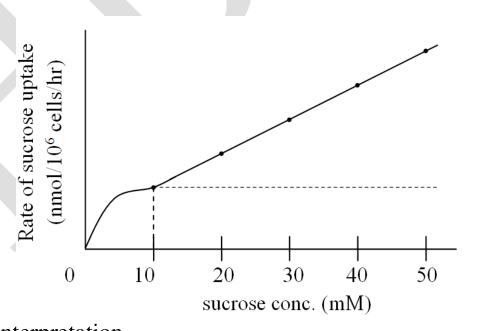
Sucrose uptake vs concentration graphTopic: Fluid Mechanics Metodi: Experimental Data Analysis, Graph Linearization Competenze: Diagrammatic Reasoning, Experimental Data Analysis Fonte: Testo (PDF) — p.5
Problema 10
(1 point) Phytoalexins are a type of oligosaccharin molecules which act as defense molecules in case of any pathogenic attack in plants. Which of the following is the correct sequence of attack and defense?
(A) Fungal invasion of plant cells → Pectinase secreted by plant cells → Phytoalexins produced by plant cells. (B) Fungal invasion of plant cells → Chitinase secreted by plant cells → Phytoalexins produced by fungal cells. (C) Plant cell invades fungal body → Pectinase secreted by plant cells → Phytoalexins produced by plant cells. (D) Fungal invasion of plant cells → Pectinase secreted by fungal cells → Phytoalexins produced by plant cells.
Topic: Modern-Quantum Physics Metodi: Physical Modeling Competenze: Physical Reasoning Fonte: Testo (PDF) — p.6
Problema 11
(1 point) Which among the following physiological changes occur when plants experience drought?
(i) Accumulation of abscisic acid (ii) Accumulation of solutes (iii) Increased photosynthesis (iv) Increased stomatal conductance (v) Increased cell elongation
(A) (i) & (ii) (B) (i) & (iii) (C) (ii) & (v) (D) (iii) & (iv)
Topic: Fluid Mechanics, Thermodynamics Metodi: Physical Modeling Competenze: Physical Reasoning Fonte: Testo (PDF) — p.6
Problema 12
(1 point) A researcher was studying photosynthesis in two species of photoautotrophic diatoms P and Q. The efficiency of photosynthesis in terms of uptake of CO was determined with increasing ambient CO concentration (Graph I) and increasing intercellular CO concentration at two different concentrations of O (Graph II). Based on these experimental findings, diatoms P and Q respectively possess ______ & ______ pathway of photosynthesis.
(A) C3 and C4 (B) C4 and C3 (C) C3 and CAM (D) C4 and CAM
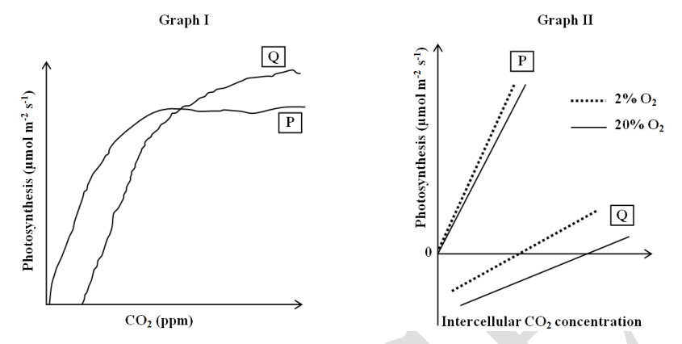
CO2 uptake graphs for diatoms P and QTopic: Thermodynamics Metodi: Experimental Data Analysis, Graph Linearization Competenze: Diagrammatic Reasoning, Experimental Data Analysis Fonte: Testo (PDF) — p.7
Problema 13
(1 point) Anika was studying pigments found in red algae. During this study, she extracted the pigments in different solvents. Following were the absorption spectra (P and Q) of the aqueous extracts. Select an option which correctly depicts the two pigments.
(A) P: Phycocyanin, Q: Xanthophyll (B) P: Chlorophyll a, Q: Chlorophyll d (C) P: Phycoerythrin, Q: Phycocyanin (D) P: Chlorophyll b, Q: Phycoerythrin
Topic: Wave Optics Metodi: Experimental Data Analysis Competenze: Diagrammatic Reasoning, Experimental Data Analysis Fonte: Testo (PDF) — p.7
Problema 14
(1 point) Among various types of digestive systems, horse exhibits a modified monogastric type of stomach and digestive system. The correct path of food in this type of digestive system is:
(A) Mouth → esophagus → stomach → small intestine → large colon → small colon → cecum → rectum → anus (B) Mouth → esophagus → stomach → small intestine → cecum → large colon → small colon → rectum → anus (C) Mouth → esophagus → cecum → stomach → small intestine → large colon → rectum → anus (D) Mouth → esophagus → cecum → small intestine → large colon → small colon → rectum → anus
Topic: Fluid Mechanics Metodi: Physical Modeling Competenze: Physical Reasoning Fonte: Testo (PDF) — p.7
Problema 15
(1 point) Balance of internal environment or homeostasis is maintained in fish by different mechanisms. Two species of fish P and Q are shown in the figures. Which of the following correctly describes homeostasis in them?
(A) Fish P loses salt by diffusion and gains water by osmosis. (B) Fish Q gain salt and water by diffusion and osmosis respectively. (C) In fish P, active transport across skin helps recover the salts. (D) In fish Q, active transport in kidneys helps to recover Mg, SO and other divalent cations.
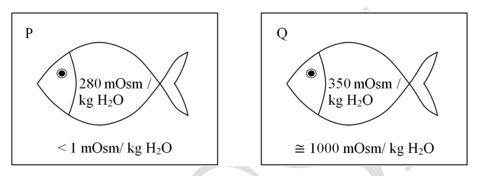
Two fish species P and QTopic: Fluid Mechanics Metodi: Physical Modeling Competenze: Physical Reasoning, Diagrammatic Reasoning Fonte: Testo (PDF) — p.8
Problema 16
(1 point) Requirement of energy during muscle contraction can be readily supplied by transfer of high energy phosphate bond from phosphocreatine (PCr) to generate ATP. However, resynthesis of used up PCr involves the rephosphorylation of creatine by aerobically produced ATP. PCr recovery rate in three individuals X, Y and Z is shown.
X, Y and Z most likely respectively represent:
(A) a sprinter, a distance runner and an individual with mitochondrial disease. (B) a marathon runner, a sprinter and a healthy individual. (C) a person above 80 years of age, a young adult and a child below 15 years. (D) an old person with sedentary lifestyle, a young individual with active lifestyle and a young individual with sedentary lifestyle.
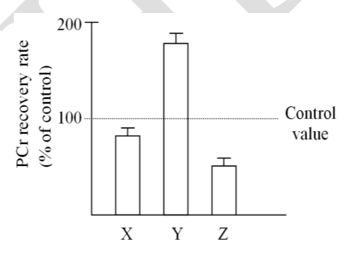
PCr recovery rate for X, Y and ZTopic: Thermodynamics Metodi: Experimental Data Analysis, Graph Linearization Competenze: Diagrammatic Reasoning, Experimental Data Analysis Fonte: Testo (PDF) — p.8
Problema 17
(1 point) Variations in the amount of fatty acids P and Q in the bone marrow lipids in the legs of an Arctic reindeer are shown below. X and Y indicate two locations along the limb.
P, Q, X and Y respectively represent:
(A) oleic acid, stearic acid, proximal part and distal part. (B) palmitic acid, stearic acid, distal part and mid part. (C) stearic acid, oleic acid, distal part and proximal part. (D) stearic acid, palmitic acid, mid part and distal part.
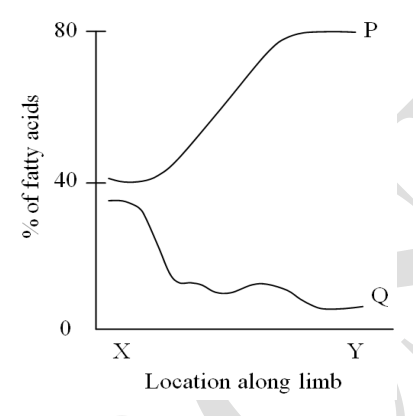
Fatty acid variation along reindeer legTopic: Thermodynamics Metodi: Experimental Data Analysis Competenze: Diagrammatic Reasoning, Experimental Data Analysis Fonte: Testo (PDF) — p.9
Problema 18
(1 point) Resting metabolic rates (RMR) as a function of ambient temperature for an animal, 1-day old and 14-day old, are shown.
Select the correct statement from the following.
(A) The continuous decrease in RMR upto 10°C shows that the animal is a heterotherm. (B) The cost for thermoregulation decreases as the animal grows older. (C) The body temperature of newborn is much higher than the older animal. (D) As the animal grows older, the metabolic requirements of the animal decrease.
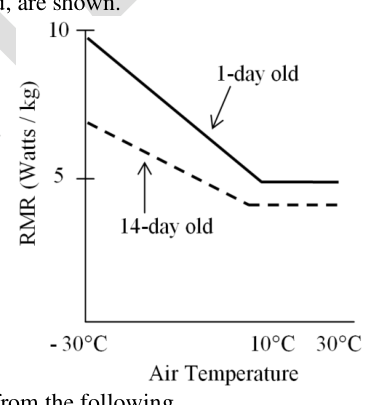
RMR vs temperature for 1-day and 14-day old animalTopic: Thermodynamics Metodi: Experimental Data Analysis, Graph Linearization Competenze: Diagrammatic Reasoning, Experimental Data Analysis Fonte: Testo (PDF) — p.9
Problema 19
(1 point) Plasma levels of three biomolecules (P, Q and R) were measured during starvation of 24 hours and the following graph was obtained.
P, Q and R respectively are:
(A) free fatty acids, glucose and insulin. (B) insulin, liver glycogen and free fatty acids. (C) ketone bodies, glucagon and insulin. (D) glucagon, glucose and liver glycogen.
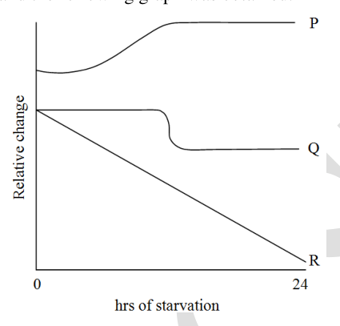
Plasma levels of P, Q, R during starvationTopic: Thermodynamics Metodi: Experimental Data Analysis, Graph Linearization Competenze: Diagrammatic Reasoning, Experimental Data Analysis Fonte: Testo (PDF) — p.10
Problema 20
(1 point) Assume that independent orientation of chromosomes in meiosis and random union of gametes produced by male and female of a species are the only responsible factors for genetic variations in their offspring. If the diploid chromosome number of this species is 40, the number of possible combinations of chromosomes for their sperm / ovum is and number of possible combinations of chromosomes for their offspring is , then values of A, B, P and Q would be:
(A) A=20, B=20, P=40, Q=40 (B) A=40, B=40, P=20, Q=20 (C) A=2, B=2, P=20, Q=40 (D) A=2, B=2, P=40, Q=40
Topic: Modern-Quantum Physics Metodi: Statistical Averaging, Physical Modeling Competenze: Mathematical Modeling, Physical Reasoning Fonte: Testo (PDF) — p.10
Problema 21
(1 point) Consider the genome of a diploid organism. The palindromic recognition site for the restriction enzyme P occurs once in a certain intergenic region of this genome. A mutation arises in the recognition site of P in this region of the genome that makes the new palindromic site susceptible to restriction enzyme Q but not to P anymore. This mutation spreads in the population. Consider (i) random mating and (ii) absence of any correlation of this mutation with fitness and (iii) P and Q are identical to each other except for the site they recognize. After a long time in evolutionary terms, most of the genomes in the population will be cleaved by:
(A) only P (B) only Q (C) neither P nor Q (D) both P and Q
Topic: Modern-Quantum Physics Metodi: Statistical Averaging, Physical Modeling Competenze: Physical Reasoning, Mathematical Modeling Fonte: Testo (PDF) — p.11
Problema 22
(1 point) Consider a hypothetical species where meiotic cell division occurs after zygote formation. This organism is likely to be:
(A) sexual diploid. (B) asexual diploid. (C) sexual haploid. (D) asexual haploid.
Topic: Modern-Quantum Physics Metodi: Physical Modeling Competenze: Physical Reasoning Fonte: Testo (PDF) — p.11
Problema 23
(1 point) Considering the extant animals with flight, what is the minimum number of independent migration events to land assuming that life originated in oceans?
(A) 1 (B) 2 (C) 3 (D) 4
Topic: Modern-Quantum Physics Metodi: Physical Modeling, Order-of-Magnitude Estimation Competenze: Physical Reasoning, Estimation & Approximation Fonte: Testo (PDF) — p.11
Problema 24
(1 point) Genetic drift is a random fluctuation in allelic frequencies owing to the variations in reproductive fitness in populations. The chance of drift causing gene fixation is highest:
(A) in small populations. (B) in large populations. (C) when neutral genes are located near genes under selection. (D) when genes are under negative selection.
Topic: Modern-Quantum Physics Metodi: Statistical Averaging, Physical Modeling Competenze: Physical Reasoning, Mathematical Modeling Fonte: Testo (PDF) — p.11
Problema 25
(1 point) A family pedigree for a rare body trait is shown below. The affected persons are shown as filled symbols.
The inheritance pattern of the trait is most likely to be:
(A) X-linked recessive (B) Autosomal recessive (C) X-linked dominant (D) Autosomal dominant with incomplete penetrance
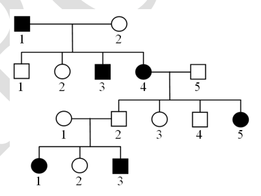
Family pedigree for a rare traitTopic: Modern-Quantum Physics Metodi: Physical Modeling, Symmetry Argument Competenze: Diagrammatic Reasoning, Physical Reasoning Fonte: Testo (PDF) — p.11
Problema 26
(1 point) Field capacity can be defined as the water content of a soil after it has been saturated with water and the excess water has been allowed to drain away. The field capacity of soil depends on the type of soil particles that make up the soil. The physical characteristics of different types of soils (I – IV) are given below.
| Soil | Particle diameter (m) | Surface area per gm (m) |
|---|---|---|
| I | 20 – 2 | 10 – 100 |
| II | 200 – 20 | < 1 – 10 |
| III | < 2 | 100 – 1000 |
| IV | 2000 - 200 | < 1 – 10 |
Mark the correct statement.
(A) III could be clayey soil with the maximum field capacity among I – IV. (B) I could be sandy soil with maximum field capacity among I – IV. (C) II could be sandy soil with least water retention capacity among I - IV. (D) IV could be silty soil with least water retention capacity among I - IV.
Topic: Fluid Mechanics, Elasticity & Materials Metodi: Physical Modeling, Order-of-Magnitude Estimation Competenze: Physical Reasoning, Estimation & Approximation Fonte: Testo (PDF) — p.12
Problema 27
(1 point) In the following diagram, a rocky inter tidal area is sub divided into three zones; UP: Upper, MID: Middle and LOW: Lower Inter tidal area based on geomorphology and tidal exposure.
Which of the following statements is/are correct?
i. The inhabitants of LOW region will be plankton feeders and swift swimmers like pelagic animals since this area will remain under water during high and low tides. ii. In the MID region, during low tide exposure period, maximum photosynthesis will occur hence the diversity of algae will be more. Therefore, in this region, only herbivores will be found. iii. In the UP region, animals resistant to desiccation stress (dry, hot & direct sunlight during low tides) are more likely to be found. iv. An animal having its fundamental niche in MID and UP regions may have its realized niche in the MID region due to inter-specific competition.
(A) i and ii only (B) iii and iv only (C) i, ii and iii (D) iv only
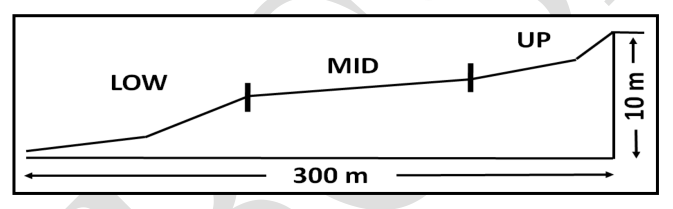
Rocky inter-tidal zones UP, MID, LOWTopic: Fluid Mechanics Metodi: Physical Modeling Competenze: Diagrammatic Reasoning, Physical Reasoning Fonte: Testo (PDF) — p.12
Problema 28
(1 point) Following graph shows different types of idealized survivorship curves I, II and III of natural populations.
Which of the following statements is correct?
(A) Type III curve represents fish and Type I curve represents frog since adult frogs are prey species for many predators and hence the mortality rate for adults will be high. (B) Both fish and frog will show Type III curve. (C) Mosquito and frog lay their eggs in water but adults live on land. The rate of mortality and survivorship for both the species in water and on land will respectively be curves III and II. (D) Both mosquito and frog pass through metamorphosis stages where high mortality occurs, hence they both will show curve type I.
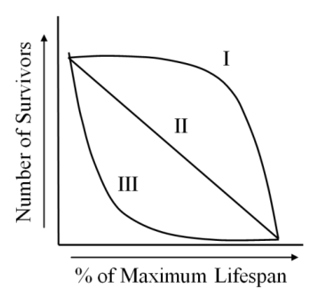
Survivorship curves I, II and IIITopic: Modern-Quantum Physics Metodi: Experimental Data Analysis, Graph Linearization Competenze: Diagrammatic Reasoning, Experimental Data Analysis Fonte: Testo (PDF) — p.13
Problema 29
(1 point) Breeding seasons of two closely related frog species Rana berlandeieri (Sp. 1) and Rana sphenocephala (Sp. 2), from two different habitats within the same geographical region were recorded independently by two research groups (group I and group II). The data obtained is shown below.
What can be the most plausible explanation for these findings?
(A) The two habitats must be very different from each other in terms of temperature and humidity. (B) The two species observed by group 1 must have been physically isolated from each other. (C) Species observed by group 2 must have experienced post-zygotic barrier. (D) Pre-zygotic barrier is stronger in species studied by group 2 than that studied by group 1.
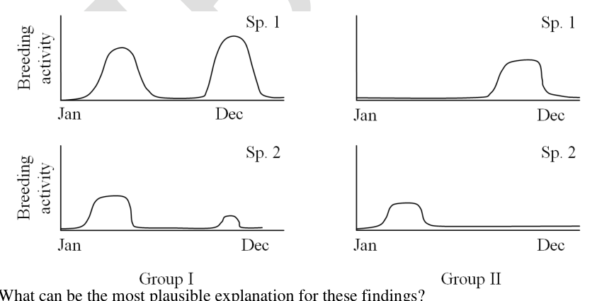
Breeding season data for two frog speciesTopic: Modern-Quantum Physics Metodi: Experimental Data Analysis, Physical Modeling Competenze: Diagrammatic Reasoning, Physical Reasoning Fonte: Testo (PDF) — p.13
Problema 30
(1 point) Diurnal variation of environment temperatures in a desert habitat is shown below.
Which of the following profiles match the variation of body temperature of a moderately active lizard dwelling in this habitat?
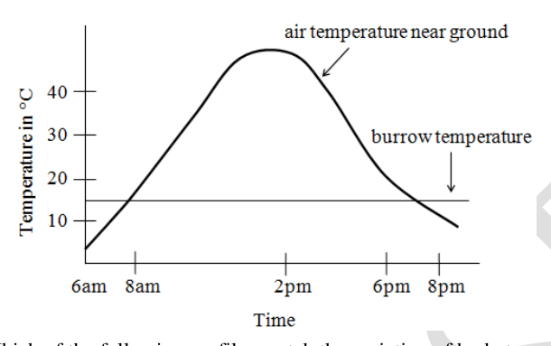
Diurnal desert temperature variation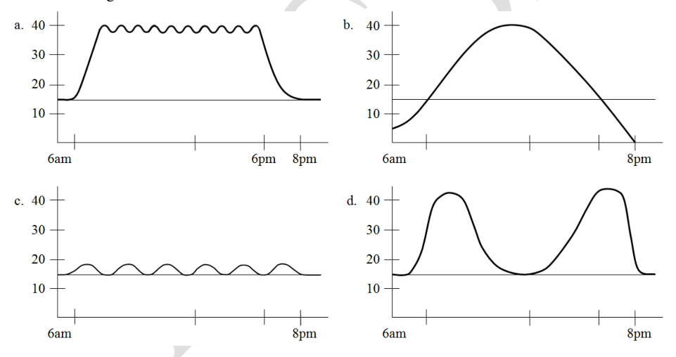
Four options for lizard body temperature profileTopic: Thermodynamics Metodi: Experimental Data Analysis, Graph Linearization Competenze: Diagrammatic Reasoning, Experimental Data Analysis Fonte: Testo (PDF) — p.14
Problema 31
(1 point) Alcock (1979) while studying reproductive strategies of Digger Bees (Centris pallida) identified two different strategies, patrolling and hovering. Patrolling involves activities such as finding virgin females buried in the nest, excavating them and mating with them. Excavation takes a few minutes during which there is a chance that other males might arrive resulting in violent fights. Hovering males, on the other hand, hover near flowering trees and wait for receptive females to fly by. Mating success is more in patrolling as compared to hovering. Which of the following statements is correct?
(A) Smaller males may prefer patrolling and larger males may prefer hovering to give tough competition for reproduction. (B) Larger males may prefer patrolling and smaller males may prefer hovering for better reproductive success. (C) All males irrespective of their size would prefer patrolling strategy for better reproductive success. (D) Larger and smaller males both may prefer hovering to avoid violent fights.
Topic: Modern-Quantum Physics Metodi: Physical Modeling, Statistical Averaging Competenze: Physical Reasoning Fonte: Testo (PDF) — p.15
Problema 32
(1 point) Parental care in animals becomes advantageous only if certain ecological factors raise the benefit/cost ratio of the trait above 1. A graph depicting the benefits for male and female parents at various values of certain ecological variables is shown.
Which of the following could be true?
i. Females have a higher threshold for parental care than males because of their increased reliability of parentage. ii. Predation on young decreases in the direction from P to Q. iii. Food availability becomes abundant in the direction of Q to P. iv. Competition for nesting sites increases from P to Q.
(A) i and iii (B) ii and iii (C) iii and iv (D) Only iv
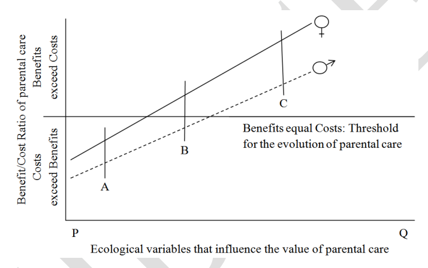
Benefit/cost ratio graph for parental careTopic: Modern-Quantum Physics Metodi: Experimental Data Analysis, Physical Modeling Competenze: Diagrammatic Reasoning, Physical Reasoning Fonte: Testo (PDF) — p.15
Problema 33
(4 points) A single copy 500 bp region was PCR amplified using human genomic DNA as the template. If after 30 cycles of PCR, the amount of DNA amplified in that amplicon was 2.16 ng, calculate the number of DNA molecules that were initially present in the sample. Also, indicate from how many cells the DNA would have been obtained. Assume molecular weight of 1 bp as 650 and the Avogadro’s number is .
Note that the final answer will be given marks only if calculations are shown in the box given and the final answer is filled in the blank.
Topic: Modern-Quantum Physics Metodi: Calculus-Integration, Physical Modeling Competenze: Mathematical Modeling, Physical Reasoning Fonte: Testo (PDF) — p.16
Problema 34
(2.5 points) In an experiment, autoradiography technique was used to study an enzyme catalyzed reaction. A set of 8 tubes were used for the experiment. To each tube, a fixed concentration of P-labelled ATP and oligonucleotide were added. Increasing units of enzyme ‘X’ was then added to the tubes and the tubes were incubated. The contents of each tube were then electrophoresed on 20% PAGE, 7M urea gel. The autoradiograph obtained is shown below.
Based on the results, indicate whether each of the following is true or false:
a. Row 1 indicates enzyme bands. b. Row 2 indicates reducing length of oligonucleotide. c. The enzyme is most likely a kinase. d. Row 2 indicates amount of radioactive decay in the ATP molecules. e. Row 1 indicates increasing radioactivity in oligonucleotide molecule.
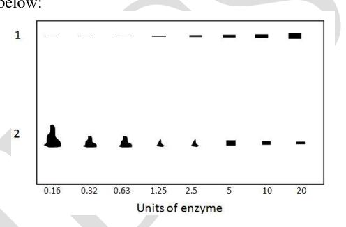
Autoradiograph of enzyme reactionTopic: Nuclear & Particle Physics, Modern-Quantum Physics Metodi: Experimental Data Analysis, Physical Modeling Competenze: Experimental Data Analysis, Diagrammatic Reasoning Fonte: Testo (PDF) — p.16
Problema 35
(2 points) An experiment was being carried out using partially differentiated (Sample S1) and undifferentiated (Sample S2) erythroblast cells. Nuclei from both S1 and S2 were isolated and exposed to increasing concentration of DNase I. The nuclear DNA was then extracted from both these samples and treated with BamH1, which cleaves the DNA around the globin sequence and normally releases a 4.6 kb globin fragment. The DNase I and BamH1 digested DNA was subjected to Southern blot analysis with a probe of labeled cloned adult globin DNA, which hybridizes to the 4.6 kb BamH1 fragment. The results of the Southern blot analysis are shown below.
Based on the results, indicate whether each of the following statements is true or false:
a. DNA from S2 cells is in a more condensed form of chromatin in which the globin gene is shielded from DNase digestion. b. Absence of 4.6 kb band at higher concentration of DNase suggests that globin synthesizing S1 cells were resistant to BamH1 digestion. c. Transcriptionally active DNA is sensitive to DNase digestion. d. If the globin gene is susceptible to initial DNase digestion, it is expected to show the 4.6 kb fragment.
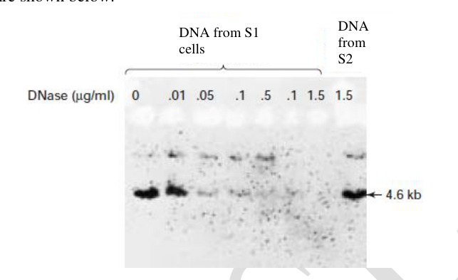
Southern blot of S1 and S2 DNase treated cellsTopic: Modern-Quantum Physics Metodi: Experimental Data Analysis, Physical Modeling Competenze: Experimental Data Analysis, Diagrammatic Reasoning Fonte: Testo (PDF) — p.17
Problema 36
(4.5 points) The ability of molecules to diffuse through the phospholipid bilayer depends on the properties of the molecule. Complete the table in the answer sheet by correlating the property of the molecule with the name of the molecule/s and its ability to diffuse through the phospholipid bilayer.
Choose from the options given below and fill in the appropriate number or alphabet in the table.
Options for molecules: i. Calcium ii. Carbon dioxide iii. Bicarbonate iv. Glycine v. Glucose
Options for ability to diffuse through phospholipid bilayer: a. Permeable b. Impermeable
Topic: Fluid Mechanics, Thermodynamics Metodi: Physical Modeling Competenze: Physical Reasoning, Mathematical Modeling Fonte: Testo (PDF) — p.17
Problema 37
(4 points) Methylation of cytosine in DNA and lysine residues in histones are the two important epigenetic marks on the chromatin that determine majority of the biological processes, such as embryonic development, stem cell differentiation and cell division cycles. Also, indiscriminate hypermethylation is often associated with tumorigenesis. These methyl marks are removed by enzymes known as dioxygenases. TET (Ten-Eleven Translocation) and Jumonji domain containing histone demethylases (JHDM) remove methyl groups from DNA and histones, respectively.
Two reactions are shown below:
Histone lysyl demethylation:
DNA demethylation:
Indicate whether each of the following is true or false:
a. Loss of function mutation in the gene that codes for isocitrate dehydrogenase will lead to hypermethylation of DNA and histones. b. Translocation of specific chromosome regions between chromosome 10 and 11 can lead to formation of tumor. c. Overexpression of JHDM in a cell will lead to metabolic imbalance and oxidative stress. d. Krebs cycle operates in the mitochondrial matrix and chromatin modifications take place in the nucleus and hence the two processes are independent.
Topic: Modern-Quantum Physics, Thermodynamics Metodi: Physical Modeling, Conservation Laws Competenze: Physical Reasoning, Mathematical Modeling Fonte: Testo (PDF) — p.18
Problema 38
(2 points) Various elements required by plants for growth and metabolism can be broadly divided into four major groups. These groups and four elements are listed below. Match them appropriately.
I. Mineral nutrients that are part of carbon compounds II. Mineral nutrients important for structural integrity III. Nutrients that remain in ionic forms IV. Nutrients involved in redox reactions
Elements: P: Silicon, Q: Copper, R: Manganese, S: Sulfur
Choose the correct option:
(A) I: S, II: P, III: R, IV: Q (B) I: P, II: R, III: Q, IV: S (C) I: S, II: R, III: Q, IV: P (D) I: R, II: S, III: P, IV: Q
Topic: Modern-Quantum Physics, Electrostatics Metodi: Physical Modeling Competenze: Physical Reasoning Fonte: Testo (PDF) — p.18
Problema 39
(2 points) Cavitation or air bubble formation in the xylem conduits can lead to break in the continuity of water columns and prevent transport. Plants native to different habitats show varying susceptibility to cavitation and its impact on flow. The graph depicts this property for three plant species I, II and III.
Indicate whether each of the following statements is a correct or incorrect interpretation:
a. Plant II is more sensitive to cavitation than plant III. b. Among the three plants, plant I is most vulnerable to water loss due to cavitation. c. Plant III is the most drought tolerant plant. d. Plant II is found in wetter habitats as compared to plants I.
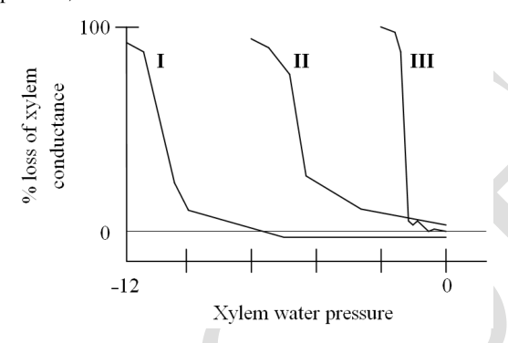
Cavitation susceptibility graph for three plantsTopic: Fluid Mechanics Metodi: Experimental Data Analysis, Graph Linearization Competenze: Diagrammatic Reasoning, Experimental Data Analysis Fonte: Testo (PDF) — p.19
Problema 40
(6 points) Representative values of water potential and its components at various points in the transport pathway from the soil through the plant to the atmosphere is tabulated.
| Location | (MPa) | (MPa) | (MPa) | (MPa) | Water potential in gas phase |
|---|---|---|---|---|---|
| A | |||||
| B | |||||
| C | |||||
| D | |||||
| E | |||||
| F |
Based on the values tabulated, identify the various locations (A – F) along the pathway. Choose from the options:
I. Soil adjacent to root II. Root xylem (near surface) III. Leaf xylem IV. Leaf internal air space V. Vacuole of mesophyll cell (at 10 m) VI. Outside air
Topic: Fluid Mechanics, Thermodynamics Metodi: Physical Modeling, Hydrostatic Equilibrium Competenze: Mathematical Modeling, Physical Reasoning Fonte: Testo (PDF) — p.19
Problema 41
(2 points) Hemoglobin and myoglobin are the molecules that are responsible for transport and storage of oxygen respectively. During evolution, some mammals underwent land to aquatic or semi-aquatic habitat transition. The properties and electrophoretic mobilities of myoglobin from six mammals are shown below. Note that is the maximum myoglobin concentration while in the graph indicates the charge on the molecule.
Indicate whether each of the following statements is correct or incorrect:
a. Diving mammals are likely to have higher concentration of muscle myoglobin as compared to non divers. b. Myoglobin protein of divers is likely to have more leucine residues in place of histidine residues. c. The net surface charge indicates that all mammals, diving and non diving, share the same primary structure of myoglobin. d. Greater the similar surface charge on the myoglobin molecule, greater is the repulsion between molecules and hence greater is the oxygen binding capacity.
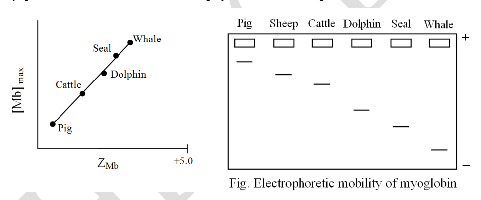
Myoglobin concentration and charge for six mammalsTopic: Electrostatics, Modern-Quantum Physics Metodi: Experimental Data Analysis, Physical Modeling Competenze: Diagrammatic Reasoning, Experimental Data Analysis Fonte: Testo (PDF) — p.20
Problema 42
(6 points) Several organs such as lungs and kidneys play an important role in blood pH homeostasis. The major buffer system that contributes to this is the bicarbonate buffer system.
For a healthy person, normal values of blood pH, pHCO and paCO are:
Blood pH 7.4; Tolerated limits: 7.35 – 7.45 pHCO: 22 – 26 mEq/L paCO: 35 - 45 mmHg
These parameters were tested for two cases (I and II):
| I | II | |
|---|---|---|
| pH | 7.44 | 7.33 |
| paCO | 28 | 25 |
| pHCO | 20 | 12 |
| paO | 54 | 89 |
Fill in the table with the primary process underway, the compensatory mechanism and the symptoms for each of the cases I and II.
Options for Primary process: (a) Respiratory acidosis, (b) Respiratory alkalosis, (c) Metabolic acidosis, (d) Metabolic alkalosis
Options for Compensatory mechanisms: (a) Uncompensated respiratory alkalosis, (b) Compensated respiratory alkalosis, (c) Uncompensated metabolic acidosis, (d) Uncompensated metabolic alkalosis, (e) Uncompensated respiratory acidosis, (f) Compensated respiratory acidosis, (g) Compensated metabolic acidosis, (h) Compensated metabolic alkalosis
Options for Symptoms: I: Person on anti-anxiety medication with shallow rapid breathing. II: Patient with cyanosis, shortness of breath, pneumonia with productive cough. III: Person with severe diarrhea over past several days. IV: Person with severe nausea, peptic ulcers and heavy consumption of milk and CaCO tablets.
Topic: Thermodynamics, Fluid Mechanics Metodi: Experimental Data Analysis, Physical Modeling, Ideal Gas Law Competenze: Mathematical Modeling, Physical Reasoning Fonte: Testo (PDF) — p.21
Problema 43
(2.5 points) Intravenous fluids (IVs) are supplemental fluids that perform different functions such as restoring normal fluid volume or electrolyte balance when the oral route is compromised in humans.
Intravenous Fluids: I. Normal saline solution (Isotonic) II. Dextrose 5% solution (Isotonic) III. Dextrose 2.5% solution (Hypotonic)
Descriptions: (A) Initially acts as isotonic and then hypotonic solution. (B) Used to replace sodium losses in burn injuries. (C) Used to treat cellular dehydration but should not be used with blood products. (D) Should not be used in pulmonary oedema. (E) Used to treat hypernatremia.
Match the descriptions to the appropriate solution and fill in the blanks with the appropriate number of the fluid (I – III).
Topic: Fluid Mechanics, Thermodynamics Metodi: Physical Modeling Competenze: Physical Reasoning, Mathematical Modeling Fonte: Testo (PDF) — p.22
Problema 44
(2.5 points) If the operator region of lac operon in E. coli is replaced with that of operator from trp operon, predict what will happen to the expression of lac operon genes in the medium that contains:
i. Only Glucose, no lactose, no tryptophan ii. No glucose, no lactose, only tryptophan iii. No glucose, no tryptophan, only lactose iv. Tryptophan and lactose, no glucose v. Tryptophan, IPTG (analogue of lactose), no glucose
Indicate whether lac operon will be expressed or will not be expressed by putting tick marks in the appropriate boxes.
Topic: Modern-Quantum Physics Metodi: Physical Modeling, Superposition Principle Competenze: Physical Reasoning, Mathematical Modeling Fonte: Testo (PDF) — p.22
Problema 45
(3 points) Given below is the pathway for breakdown of phenylalanine to fumarate and acetoacetate. This involves six enzymes (marked Enz-A to Enz-F). Each enzyme is encoded by a single gene and the 6 genes are present on different chromosomes.
Phenylalanine Tyrosine p-hydroxyphenylpyruvate Homogentisate 4-maleylacetoacetate 4-fumarylacetoacetate → Fumarate + Acetoacetate
PKU is an autosomal recessive genetic disorder caused by a defect in the enzyme acting on phenylalanine. Alkaptonuria is another autosomal recessive genetic disorder characterized by the accumulation of homogentisate. A female with PKU, who is also a carrier for Alkaptonuria, marries a male with Alkaptonuria, who is a carrier for PKU.
What is the probability (in %) that their child will show both PKU and Alkaptonuria phenotypes?
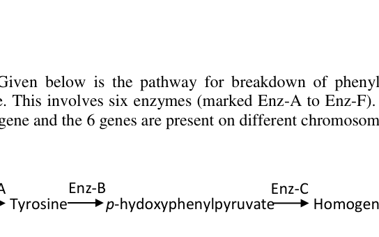
Phenylalanine breakdown pathway enzymesTopic: Modern-Quantum Physics Metodi: Statistical Averaging, Physical Modeling Competenze: Mathematical Modeling, Physical Reasoning Fonte: Testo (PDF) — p.23
Problema 46
(3 points) Consider a single mutation in wheat that causes grains to turn black. Black is recessive to the wild-type brown grains. In a population of wheat plants, 56 out of 10000 plants bore black grains. If the population is in Hardy-Weinberg equilibrium, how many of the plants are heterozygous for the mutation locus?
Fill in the blank with the correct answer (show calculations).
Topic: Modern-Quantum Physics Metodi: Statistical Averaging, Physical Modeling Competenze: Mathematical Modeling, Physical Reasoning Fonte: Testo (PDF) — p.23
Problema 47
(2 points) In Drosophila, red eye colour is a dominant X-linked trait. A reciprocal cross involves a pair of crosses between a male of one phenotype and a female of another phenotype for a given trait, and vice versa. All parent organisms are true breeding.
If reciprocal crosses between white-eyed and red-eyed Drosophila adults were carried out, then mark each of the following statements as true or false:
a. Use of a red-eyed female parent results in four phenotypic groups of progeny in the F2 generation. b. The probability of producing a red-eyed female in the F2 progeny in a cross using a white-eyed male parent is 25%. c. A cross with a red-eyed male parent yields F2 progeny in the ratio 1:1:1:1. d. A white-eyed female is only obtained in the F2 progeny of a cross with a red-eyed male parent.
Topic: Modern-Quantum Physics Metodi: Statistical Averaging, Physical Modeling Competenze: Mathematical Modeling, Physical Reasoning Fonte: Testo (PDF) — p.23
Problema 48
(2 points) When a pure line of wheat plant with coloured kernel was crossed to a plant with white kernel and resulting F1 were selfed, the coloured kernels were found in 93.75% of the plants. The correct pathway for the kernel pigment synthesis is:
Choose the correct option and put a tick mark in the appropriate box.
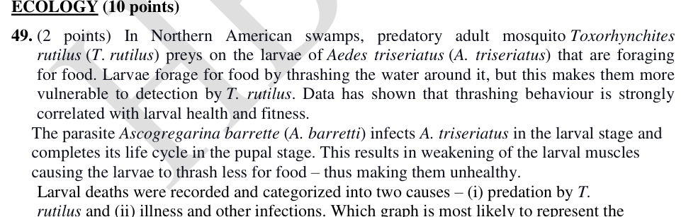
Pathways for kernel pigment synthesis optionsTopic: Modern-Quantum Physics Metodi: Statistical Averaging, Physical Modeling Competenze: Mathematical Modeling, Physical Reasoning Fonte: Testo (PDF) — p.24
Problema 49
(2 points) In Northern American swamps, predatory adult mosquito Toxorhynchites rutilus (T. rutilus) preys on the larvae of Aedes triseriatus (A. triseriatus) that are foraging for food. Larvae forage for food by thrashing the water around it, but this makes them more vulnerable to detection by T. rutilus. Data has shown that thrashing behaviour is strongly correlated with larval health and fitness.
The parasite Ascogregarina barretti (A. barretti) infects A. triseriatus in the larval stage and completes its life cycle in the pupal stage. This results in weakening of the larval muscles causing the larvae to thrash less for food – thus making them unhealthy.
Larval deaths were recorded and categorized into two causes – (i) predation by T. rutilus and (ii) illness and other infections. Which graph is most likely to represent the scenario described above?
Choose the correct option and put a tick mark in the appropriate box.
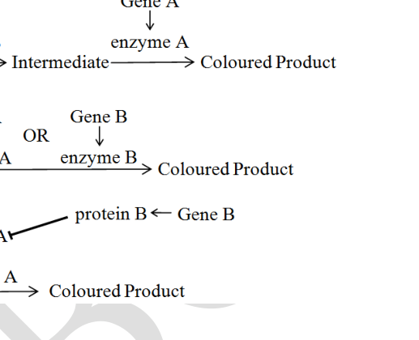
Four graph options for larval death scenariosTopic: Modern-Quantum Physics Metodi: Experimental Data Analysis, Physical Modeling Competenze: Diagrammatic Reasoning, Physical Reasoning Fonte: Testo (PDF) — p.24
Problema 50
(2 points) Intertidal invertebrates can avoid overheating by evaporative cooling, combined with circulation of body fluids. Studies were carried out on two species of intertidal filter feeding barnacles to investigate the effect of temperature on the beating of cirri (feeding appendages). The findings are shown in the graph below.
Indicate whether each of the following statements is correct or incorrect:
a. Movement of the cirri in intertidal barnacles increases with increasing temperature but declines near an upper thermal limit indicating a specific threshold value for both lower and upper intertidal barnacles. b. Lower intertidal barnacles do not require a mechanism for high temperature tolerance since they have closely shut plates and are not desiccated for a long duration. c. Barnacles inhabiting upper intertidal region feed more efficiently at all temperatures as compared to the barnacles in the lower intertidal region. d. Upper intertidal barnacles tend to maintain greater coordinated ciliary motion leading to greater fluid movements at higher temperatures as compared to lower temperatures. Therefore they are more resistant to desiccation.
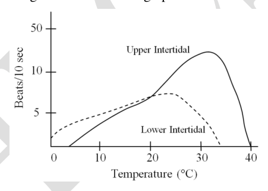
Cirri beating rate vs temperature for two barnacle species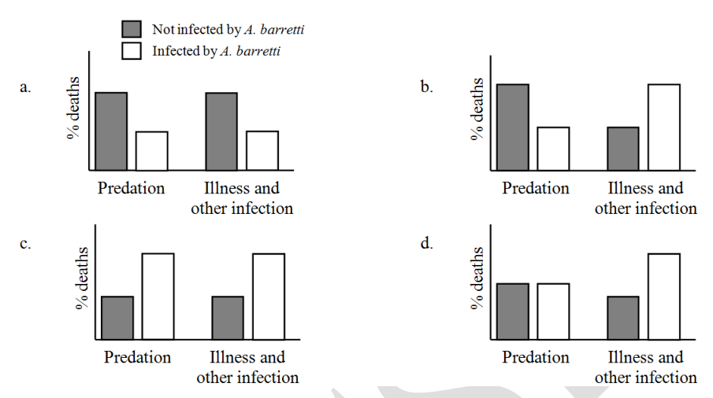
Barnacle cirri beat rate vs temperature graphTopic: Thermodynamics, Fluid Mechanics Metodi: Experimental Data Analysis, Graph Linearization Competenze: Diagrammatic Reasoning, Experimental Data Analysis Fonte: Testo (PDF) — p.25
Problema 51
(2 points) In the following flow chart, the vertical interlinking of trophic levels Producers (P), Herbivores (H), Primary Carnivores (C) and Top Carnivore (TC) is shown. Within a trophic level, horizontal interactions are also seen which are marked here as Z interactions.
Indicate whether each of the following statements is correct or incorrect:
a. Amount of energy transferred to TC2 through C2 involves a total of three organisms and through C3 involves four organisms. Therefore, if food chain through C3 is prominently operative then TC2 will receive more energy than the food chain through C2. b. The dependency of TC2 on the previous trophic level for energy is more than TC1. c. Interaction Z is interspecific competition for resources other than for food. d. Since TC1 can receive energy from more than one lower trophic levels, the net energy available to TC1 is greater than that available to TC2.
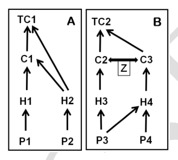
Trophic level flow chart with Z interactionsTopic: Conservation of Energy, Modern-Quantum Physics Metodi: Conservation Laws, Physical Modeling Competenze: Diagrammatic Reasoning, Physical Reasoning Fonte: Testo (PDF) — p.26
Problema 52
(2 points) “Louping ill virus” is a tick borne virus and can infect red grouse (small sized bird). If amplified in grouse, it can cause substantial mortality. The virus is transmitted by a tick (Ixodida vicinus) which can feed on many vertebrates but can complete its life cycle only on large mammals. Red deer can amplify the tick but not virus. Hares can amplify both while grouse can amplify only the virus.
Assume: No measurable cost to hare from virus and no fitness cost to deer/hare due to low intensity tick infestation.
Mark each of the following statements as true or false:
a. Deer and grouse can independently maintain the virus. b. Hare-grouse community can maintain the virus. c. In deer-grouse community only grouse will suffer from virus mediated apparent complication. d. At very high deer densities, the probability of viral infection in the grouse population is reduced.
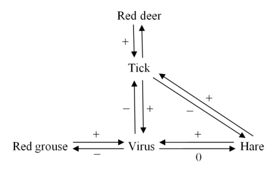
Louping ill virus transmission diagramTopic: Modern-Quantum Physics Metodi: Physical Modeling, Statistical Averaging Competenze: Physical Reasoning, Diagrammatic Reasoning Fonte: Testo (PDF) — p.27
Problema 53
(2 points) The size of gill rakers in fish varies with the type of diet and habitat that they dwell in. The relative frequency of the size of gill rakers in a certain fish species A is shown in Graph 1. Graph 2 depicts the introduction of another species B which is a limnetic (surface-dwelling) species and graph 3 shows the relative distribution of the characters after many generations post-introduction of species B. Relative sizes of the gill rakers are denoted as S, M and L corresponding to small, medium and large in the graphs.
Mark each of the following statements as true or false:
a. Introduction of species B most likely resulted in a shift in distribution of species A from exclusively benthic to limnetic habitat. b. Species A and B seem to co-exist and share an amensalistic relationship with each other. c. The interaction between species A and B leads to character displacement in species A. d. Introduction of species B causes species A to shift to a diet dominated by invertebrates found only at the bottom of the lake.
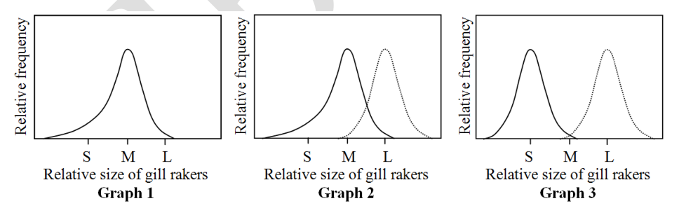
Gill raker size distribution before and after species B introductionTopic: Modern-Quantum Physics Metodi: Experimental Data Analysis, Graph Linearization Competenze: Diagrammatic Reasoning, Experimental Data Analysis Fonte: Testo (PDF) — p.27
Problema 54
(2 points) An experiment to assess fighting behavior in male toads Bufo bufo was being carried out. Medium-sized males (attackers) were allowed to attack either small or large paired males (defenders). These paired males who were physically associated with the females were silenced by means of a band tied around their vocal sacs. During an attack, tape-recorded croaks were broadcast from a loudspeaker just next to the pair. The number of attacks, when two types of pitches (high and deep) of broadcast croaks were played, was recorded.
Based on the findings, mark each of the following statements as true or false:
a. Croak pitch is the only assessment cue used to assess the body strength of rivals. b. High pitch along with visual cues could be a strong predictor that the rival has better fighting abilities. c. Large males, being difficult to displace, are attacked by rivals only when they croak at high pitches. d. In absence of visual cues, weak individuals could evade attacks by mimicking sound.
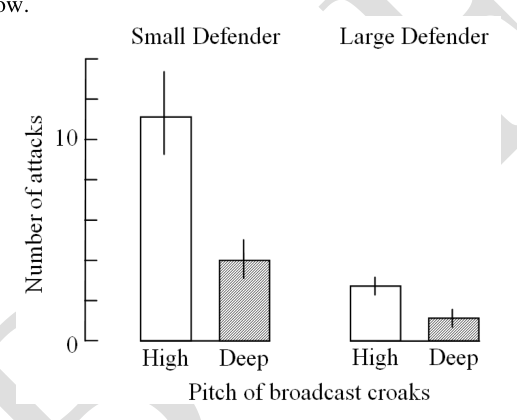
Number of attacks vs croak pitch for small and large malesTopic: Oscillations & Waves, Modern-Quantum Physics Metodi: Experimental Data Analysis, Physical Modeling Competenze: Experimental Data Analysis, Physical Reasoning Fonte: Testo (PDF) — p.28
Problema 55
(2 points) Most frogs lack teeth on the lower jaw. One genus, Amphignathodon, shows teeth on the lower jaw. None of the ancestral frogs had teeth on the lower jaw. In this context, state whether each of the following statements is true or false:
a. ‘Absence of teeth’ is a synapomorphic feature for all the frogs if those from the genus Amphignathodon are excluded in the classification. b. Absence of teeth in birds and most frogs is an example of convergent evolution. c. Microphagous food habit might have led to evolutionary reversal of the trait in frogs. d. Presence of teeth in frogs belonging to the genus Amphignathodon and higher vertebrates is an example of homoplasy.
Topic: Modern-Quantum Physics Metodi: Physical Modeling, Symmetry Argument Competenze: Physical Reasoning, Diagrammatic Reasoning Fonte: Testo (PDF) — p.29
Problema 56
(4 points) A list of evolutionary features found in vertebrates is given below. Place them correctly in the cladogram given in the answer sheet.
Features: A. Gizzard B. Feathers C. Claws/nails D. Keratinous scales E. Jaws F. Lungs G. Continuously growing incisors H. Fur
Topic: Modern-Quantum Physics Metodi: Physical Modeling, Symmetry Argument Competenze: Diagrammatic Reasoning, Physical Reasoning Fonte: Testo (PDF) — p.29